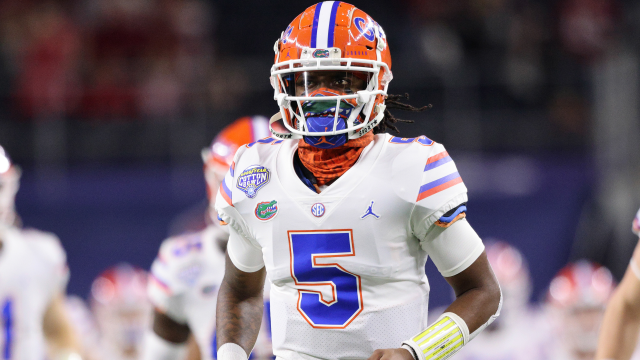

Meet Head Coach Dan Mullen

On November 26, 2017, Dan Mullen signed a six-year, $36.6 million contract to become the new head coach of the Florida Gators football team. ESPN ranked Mullen's first recruiting class at Florida at 13, an increase of six from the previous season. After a 4–7 campaign the previous year under coach Jim McElwain, Mullen's first Gator squad went 10–3 and finished ranked No. 7 in the AP Poll after a 41–15 victory over then-No. 8 Michigan in the Peach Bowl. He led the Gators to an 11–2 record the following year including a 36–28 win over Virginia in the Orange Bowl.
In his third season as the Gators' coach, Mullen amassed an 8–3 record and the school's first ever trip to the Cotton Bowl against Oklahoma. Quarterback Kyle Trask put up record-breaking numbers, including a nation-high 4,125 passing yards and 43 passing touchdowns, the latter of which set a school single-season record.
2021-2022 Expectations

Gator Nation is Back!
Is there any reason to think otherwise?
The Gators head into the year with a couple of new coaches on both sides of the football, including its quarterback coach. The team's starting quarterback last year, Kyle Trask, has moved on to greater things in the NFL with the Tampa Bay Buccaneers, selected in the second round.
Player spotlight - Emory Jones
Competed in nine games, recording 18 completions on 32 attempts for 221 yards, including two touchdowns and an interception… Also logged 217 yards on the ground in 32 attempts for two touchdowns… Appeared against Ole Miss, completing one pass for 30 yards and rushing for 37 yards… Did not play against South Carolina and Texas A&M… Recorded one rush for seven yards against Missouri… Finished with two rushes for 17 yards against Georgia… Completed four passes for 29 yards on seven attempts against Arkansas, including a 9-yard touchdown pass… Also rushed for 37 yards and a touchdown on six attempts… Finished with a solo passing attempt at Vanderbilt which resulted in a 30-yard touchdown… Added an additional 25 yards on four rushing attempts… Completed all four passing attempts for 46 yards against Kentucky while also rushing for eight yards on two attempts… Did not play at Tennessee… Logged one rush for two yards against LSU… Attempted two rushing attacks for a total of 24 yards against Alabama… Completed eight passes for 86 yards against Oklahoma while also adding 60 yards on the ground and a touchdown... 2019: Appeared in 11 games as a reserve quarterback… Had an efficiency rating of 150.86… Completed 25 passes on 38 attempts for 267 yards and three touchdowns… Completed a career-long throw of 48-yards against Missouri… Notched 256 total rushing yards throughout the season, ranking third among the team… Had four rushing touchdowns, including a career-high three against Vanderbilt… Carried the ball a career-high nine times at LSU... 2018: Earned a redshirt as he appeared in just four games (Charleston Southern, Georgia, Idaho, Michigan)… Saw significant playing time against CSU and Idaho as a backup quarterback, but was used in specific packages designed for him against UGA and UM… Throughout the four contests, Jones completed 75 percent (12-16) for 125 yards, two touchdowns and no interceptions… Recorded 41 yards on 18 carries on the ground as he averaged 2.3 yards per attempt… Ran the ball four times for 12 yards and caused Georgia to commit a defensive pass interference penalty on a deep ball to Van Jefferson in his lone SEC action of the season… Recorded all the aforementioned passing statistics in UF’s game against Idaho… Tallied a 35-yard completion to Trevon Grimes during that game… Named to the SEC Academic Honor Roll.